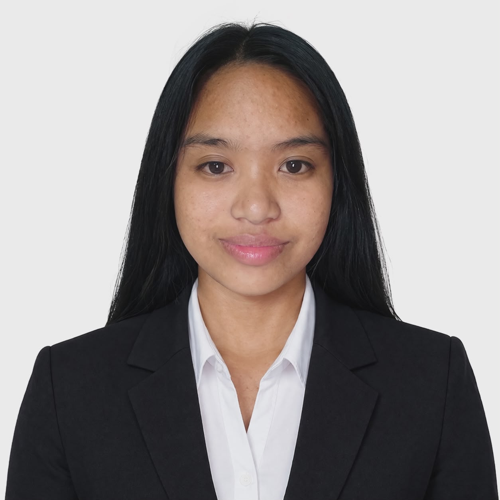

Portfolio — BSIT
Aspiring IT Professional
Who I Am
Hello, I am Eddielyn Asis Bacquial, a BSIT student from Our Lady of the Sacred Heart College of Guimba who is passionate about technology and development.
I enjoy learning new skills, exploring different areas in IT, and creating projects that can solve real-life problems.
I am dedicated to improving my knowledge in programming, web development, and system design.
As a student, I strive to grow both personally and professionally by staying curious and open to new challenges.
My goal is to become a skilled IT professional who can contribute to innovative solutions and make a positive impact in the field of technology.
Get to Know Me
Skills